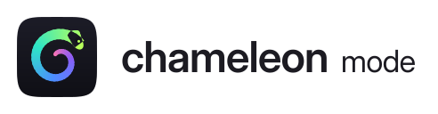
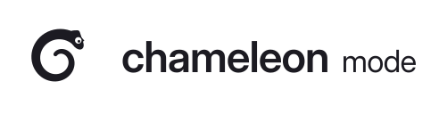
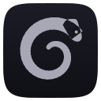
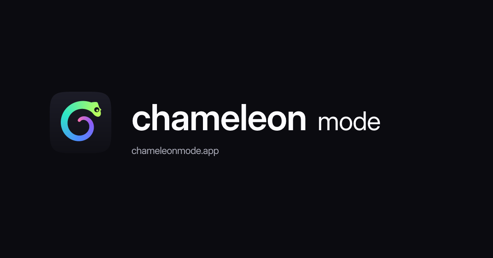
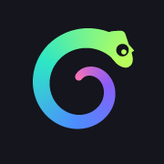
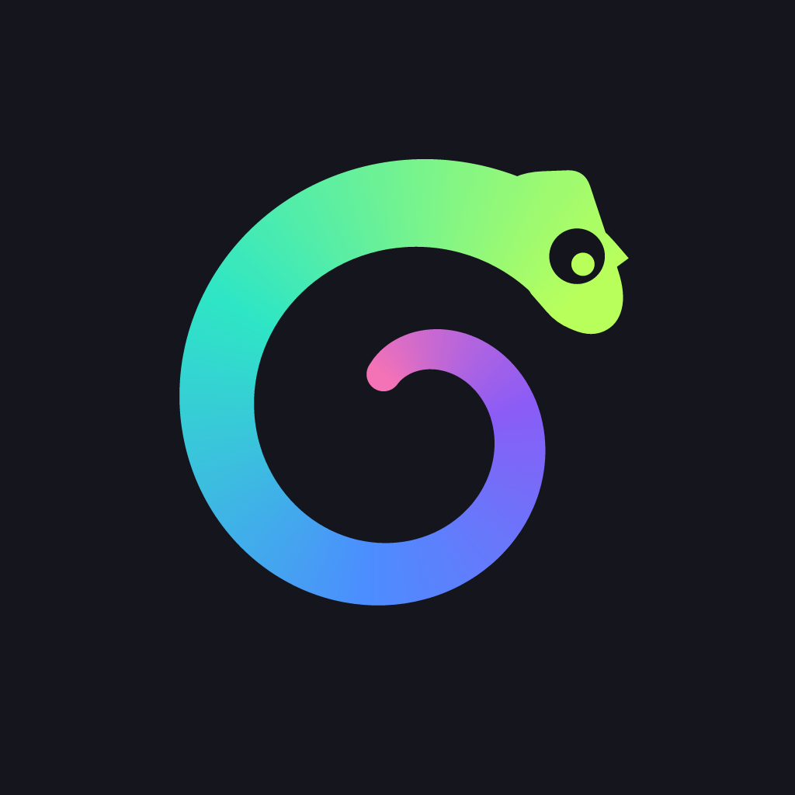

Identidad visual
Edición 01 · 2026
chameleonmode.app
chameleonmode.app
Conservamos el camaleón, el ojo y el espectro original. El nombre suma una firma sobria: chameleon semibold y mode regular, al 72% de su tamaño.

COLOR · FONDO CLARO
UNA TINTA · SIN BALDOSAAl menos 1/8 del ancho del símbolo alrededor del conjunto. Mantener proporciones y alineación.
Símbolo desde 32 px. Horizontal desde 180 px. A 16 px, usar el dibujo óptico específico.
La cabeza siempre lima. El logo color conserva su baldosa. Sin sombras, contornos ni giros.
#0B0B10#F5F5F7#2EE6C5El espectro identifica al camaleón. Su orden se conserva y no se usa como escala de resultados.
Turquesa #2EE6C5 sobre oscuro. Verde profundo #007866 sobre claro. Los estados tienen texto e íconos: éxito, dificultad, fallo y error técnico.
Adaptable. Preciso. Cercano.
400 Regular · 500 Medium · 600 Semibold
Una familia para marca, títulos y lectura.
JetBrains Mono para datos. Fuentes locales y licencias OFL incluidas.
A color cuando está encendida. Neutro cuando está apagada.

Espectro original

Neutro #A7A7B5
Estas variantes corresponden al icono de la barra. El camaleón del popup mantiene su animación de despertar y dormirse, y sus controles actuales.



La barra de la extensión consume los iconos ON/OFF de 16 y 32 px. Un control automático verifica que coincidan con el kit. El popup conserva su diseño y animación.
| Destino | Formato | Exportación |
|---|---|---|
| Web y documentos | SVG | Vector |
| Presentaciones | PNG + alfa | 1× / 2× |
| Favicon | ICO + SVG | 16 / 32 / 48 |
| Extensión ON/OFF | PNG + SVG | 16–128 |
| Apple touch | PNG opaco | 180 × 180 |
| PWA / maskable | PNG opaco | 192 / 512 |
| Redes y enlaces | PNG | 1200 × 630 |
| Avatar | PNG | 1024 × 1024 |
| Concurso | PNG < 500 KB | 1000 × 1000 |
Letras en trazos. Zona segura en íconos adaptativos. RGB/sRGB para digital; perfil y prueba de color según imprenta.
La investigación orienta la marca, los formatos y la legibilidad del icono.
Separar símbolo, firma e icono de aplicación. Aquí: archivos por contexto y uso.
Un kit práctico. Aquí: SVG, PNG y monocromos con nombres claros.
Recursos por tamaño. Aquí: variantes de 16 y 32 px sincronizadas con el encendido.
El encendido global y la disponibilidad por página son conceptos distintos. El icono representa la preferencia global.
Legibilidad y percepción. Aquí: baldosa consistente y badge ON existente como apoyo al color.
Camaleón y espectro originales. Chameleon tiene el protagonismo; mode pesa menos. Portada y tarjeta social muestran sólo marca y dominio.
OFF conserva geometría y ojo, con un relleno neutro definido. No se aplica un filtro al logo ni se usa gris para afirmar que el sitio no tiene tema.
Referencias y decisiones ↗
Guía de uso e integración ↗
Los patrones son referencias; estas decisiones pertenecen al producto Chameleon Mode.